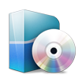

Movies
TV
Xbox
LH
Music
Update
Clean
Video
Update
Clean
Reboot
Email
Work
Personal
Home
sabNZBD+
Sickbeard
Couchpotato
Headphones Dad
Headphones Mom
NZB Sites

Forums
dBases
IMDB
TheMovieDB
TheTVDB
DVD Releases
2012 Movies
RlsLog.net
Rotten Tomatoes
unRAID
unMenu
Favorites
</body> </html>